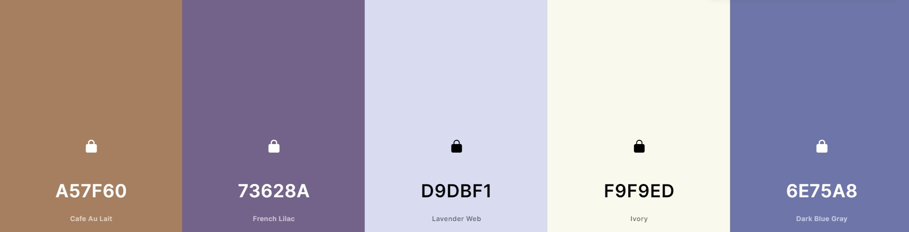

Color Scheme
I chose this color scheme as I thought the colors went well together and I love the color purple. I think I will choose the lighter purple, Lavender Web as the background. The purple to the left of it, French Lilac as the heading colors. The Ivory as the body color, I thought about using the Cafe Au Lait as the font color, and finally the last purple, Dark Blue Gray for the other stuff. I will use these colors accordingly and in sinc so they look good together.
